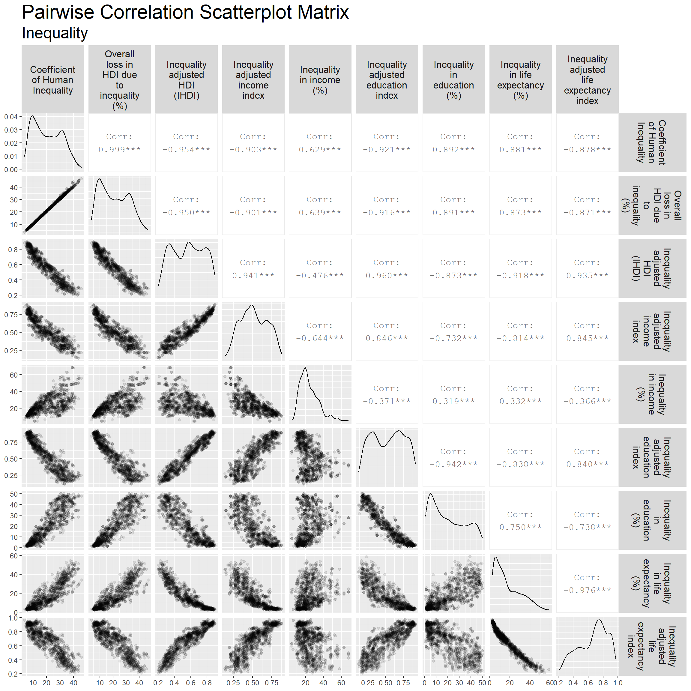
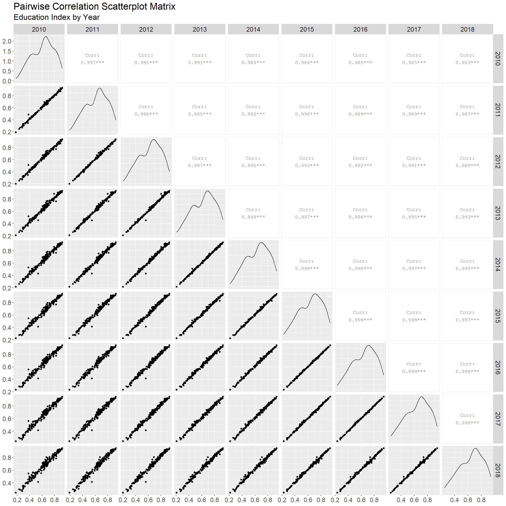
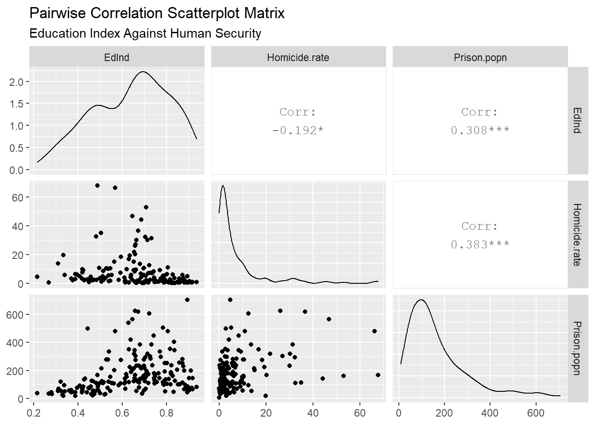
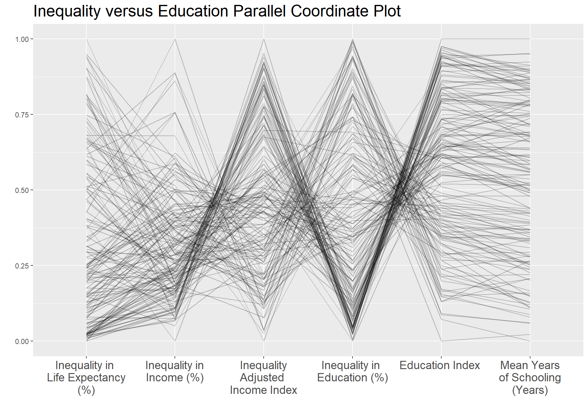
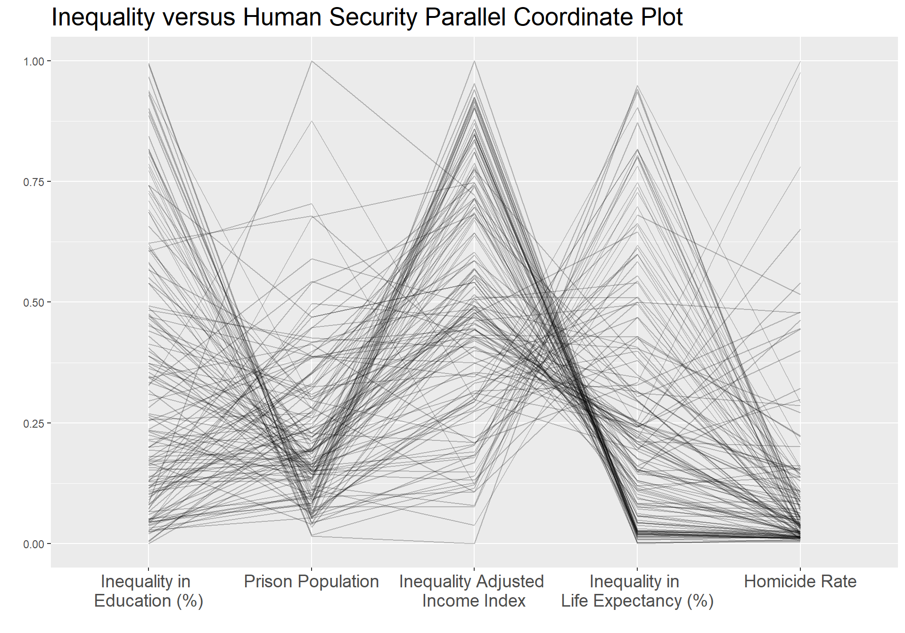

Chapter 5 Results
5.1 Variable Selection
5.1.1 Inequality Variable Selection
From Section 4.0 Missing Data, it was noted (from the Inequality parallel coordinate plot) that the following sets of features have the same proportion of missing data for nearly every country, indicating they may be related:
Coefficient of Human Inequality, Overall Loss in HDI due to Inequality (%), and Inequality-adjusted HDI (IHDI)
Inequality-Adjusted Income Index and Inequality in Income (%)
Inequality-Adjusted Education Index and Inequality in Education (%)
Inequality-Adjusted Life Expectancy Index and Inequality in Life Expectancy (%)
A scatterplot matrix of all 9 features without the missing data is shown below, so that pairwise correlations between all features can be examined. This analysis begins with the feature groups listed above, with strong relationships in their missing data, then extends to the remaining feature variable pairs.

First, note the feature groups where missing data appear to be in equal proportions for most countries:
Coefficient of Human Inequality, Overall Loss in HDI due to Inequality (%), and Inequality-Adjusted HDI (IHDI): The three pairwise correlation coefficients between these three features are 0.999, -0.954, and -0.950, showing these three feature are highly correlated when the data is not missing.
Inequality-Adjusted Income Index and Inequality in Income (%): Correlation coefficient of -0.644. Despite countries missing data for both feature consistently, the two features do not appear to have as strong of a correlation as other cases discussed.
Inequality-Adjusted Education Index and Inequality in Education (%): The correlation coefficient is -0.942, showing that these two features are highly correlated when the data is not missing.
Inequality-Adjusted Life Expectancy Index and Inequality in Life Expectancy (%): The correlation coefficient is -0.976, showing that these two features are highly correlated when the data is not missing.
On the basis of the results above, the following features can be dropped without significant loss of information:
Overall Loss in HDI due to Inequality (%) - due to strong correlation with Coefficient of Human Inequality and the fact both share similar missing patterns.
Inequality-Adjusted HDI (IHDI) - highly correlated with multiple features, especially Coefficient of Human Inequality and Overall Loss in HDI due to Inequality (%) (while also sharing the same missing pattern as the latter two).
Inequality-Adjusted Education Index - highly correlated with Inequality in Education (%) when data is present and in terms of missing pattern.
Inequality-Adjusted Life Expectancy Index - highly correlated with Inequality in Life Expectancy (%) when data is present and in terms of missing pattern.
Looking at the pairplot of the 5 remaining variables, note that even though the variables do not share the same missing patterns, Coefficient of Human Inequality is strongly correlated with 3 of the remaining features (absolute correlation coefficient of ~0.9). Therefore, this feature can also be dropped. As a result, the remaining ‘Inequality’ features kept for analysis with other indicators are:
Inequality-Adjusted Income Index
Inequality in Income (%)
Inequality in Education (%)
Inequality in Life Expectancy (%)
5.1.2 Education Variable Selection
Initially we pulled only the variables with the least missing data. We then ran ggpairs across these variables to determine if they could be further narrowed in selection. Given that the variables are all relatively highly correlated, it seems Education Index (EdInd) provides the clearest comparison in analysis of correlations across human development topics.

Next, in determining how to handle the ‘Year’ variable, we examine the yearly breakdown after 2010 (as the Inequality dataset only spans 2010-2018). From here, each year appears highly correlated (.985 to .999), suggesting years do not need to be examined individually, and can be aggregated with a simple average.

5.1.3 Human Security Variable Selection
The following abbreviations will be used for variables examined in this section:
Homicide Rate (per 100,000 people) - Homicide.Rate
Prison Population (per 100,000 people) - Prison.popn
Suicide Rate (Male) (per 100,000 people) - Suicide.rate.M
Suicide Rate (Female) (per 100,000 people) - Suicide.rate.F
As noted in section 4, the Suicide Rate data are collected sporadically. While these datasets internally show the lowest proportion of missing data, they only reflect data collected for four years, (2000, 2010, 2015, and 2016) which are not consistently spaced across time.
The other datasets in this section (Homicide rate and Prison population) show a higher proportion of missing data, but reflect a larger number of consistently sampled years.
Finally, as the Refugees by Country of Origin and Homelessness due to Natural Disasters data are unavailable, they cannot be included in this analysis.
The following graph shows the pairwise correlation between all variables in the dataset, with the exception of Refugees by Country of Origin and Homelessness due to Natural Disaster.
With the exception of male and female suicide rate (0.552), none of the data show correlation coefficients above 0.5 or below -0.5, indicating they are not highly correlated.
As a result, the ‘Human Security’ variables selected for this study are the following:
Homicide Rate (per 100,000 people)
Prison Population (per 100,000 people)
5.2 Education versus Human Security (2010 - 2018)
For the actual analysis, we compare the average across ‘Education Index’ (EdInd) against the ‘Human Security’ variables:
Homicide Rate (per 100,000 people) (Homicide.rate)
Prison Population (per 100,000 people) (Prison.popn)
Here it appears that a high Education Index is associated with low Homicide Rate and Prison Population. Education and Homicides seem to have a direct relation with higher education implying lower homicide rates. Education and Prison Population seem to show a similar relation, though a high Education Index seems to be associated more with a median level of Prison Population. Notably, several countries with high education levels still show higher prison populations.
The following scatterplot matrix seems to show the relationship clearly. While higher levels of education are still associated with low Homicide Rates, restricting the analysis to lower levels of education shows an associated jump in high Homicide outliers. As expected the sign here is negative, confirming the likelihood of a negative relation between the variables.
The relationship between Education and Prison Population, though is somewhat stronger and more direct, as seen in the matrix, with a correlation of 0.3. Thus, higher levels of education seem to imply higher levels of imprisonment.

5.3 Inequality versus Education (2010 - 2018)
This section details the analysis of Inequality versus Education indicators for the selected features:
Inequality
Inequality-Adjusted Income Index
Inequality in Income (%)
Inequality in Education (%)
Inequality in Life Expectancy (%)
Education
Education Index
Mean Years of Schooling (Years)
First, all Inequality variables were compared with all Education variables in a scatterplot faceted by year from 2010 to 2018, as those were the only years with available Inequality data. It was noted that “Year” did not separate the data, as illustrated in the a sample facet plot below for Mean Year of Schooling versus Inequality in Life Expectancy (%). This was the case for every combination of variables.
As there are 6 features in total, all of which are continuous, a parallel coordinate plot is the most appropriate visualization tool for this type of data. Each of the six features was grouped by country and averaged over all years from 2010 to 2018, ignoring NA’s. The rationale is as follows:
It was shown from the facet plots previously that “Year” did not distinguish any trends.
If every Country-Year combination is a line on the parallel coordinate plot, then it would require that none of the six features have NA’s. This is too strong and may lead to underplotting given the amount of missing data in this dataset. This also ensures that every country also shows up only once or not at all.

Observations:
The two Education variables, Education Index and Mean Years of Schooling, are positively correlated. Therefore, analysis for this section will be made with Education Index only because the same conclusions will apply to Mean Years of Schooling.
There is a large cluster of countries (Cluster 1) with low Inequality in Income (%), mid to high Inequality Adjusted Income Index, low Inequality in Education (%), and mid to high Education Index.
For Cluster 1, there’s a visible negative correlation between Inequality in Education (%) and Education Index.
As Inequality-Adjusted Income Index is visibly negatively correlated with Inequality in Education (%) in Cluster 1, it can be inferred that the former is positively correlated with Education Index.
There is another cluster of countries (Cluster 2) exhibiting the opposite trend. This cluster of countries has low to mid Inequality Adjusted Income Index, high Inequality in Education (%), and low-mid Education Index.
For countries in Cluster 2, there is no obvious negative correlation between Inequality-Adjusted Income Index - Education Index and Inequality in Education (%) - Education Index like in Cluster 1.
Cluster 1 has a visible right skew in Inequality in Education (%) and a slight left skew in Education Index, while countries in Cluster 2 exhibit no significant skew for these two features compared to Cluster 1.
5.4 Inequality versus Human Security (2010 - 2018)
This section details the analysis of Inequality versus Human Security given the following variables:
Inequality
Inequality-Adjusted Income Index
Inequality in Income (%)
Inequality in Education (%)
Inequality in Life Expectancy (%)
Human Security
Homicide Rate (per 100,000 people)
Prison Population (per 100,000 people)
First, Inequality variables were contrasted against Human Security variables in a scatterplot, faceted by year from 2010 to 2018 (again, the only years Inequality data were collected).
The association between the Inequality variables (Inequality-Adjusted Income Index, Inequality in Income, Inequality in Education, and Inequality in Life Expectancy) is discussed in the Inequality variable selection, above.
Similarly, the association between the Human Security variables (Homicide Rate and Prison Population) are discussed in the Human Security variable selection, above.
Prison Population seems to show low positive correlations with two Inequality variables: Inequality-Adjusted Income Index and Inequality in Income (with correlation coefficients of .156 and .171, respectively). Interestingly, Prison Population shows negative correlations with both Inequality in Education and Inequality in Life Expectancy (-0.349 and -0.334, respectively).
Homicide Rate shows low positive correlations with Inequality in Education and Inequality in Life Expectancy (with correlation coefficients of 0.127 and 0.142).
Homicide Rate additionally shows correlations with Inequality-Adjusted Income Index, with a negative correlation of -0.324, and Inequality in Income, with a positive correlation of 0.488.
The parallel coordinate plot, below, maps some of these associations.
 The above graph reorders variables to visualize new trends.
There is a visual cluster of countries marked by a negative relationship between Inequality in Education and Prison Population, followed by a positive relationship between Prison Population and Inequality-Adjusted Income Index, and a negative relationship between Inequality-Adjusted Income Index and Inequality in Life Expectancy. Some of these countries continue to have what appears to be a direct relationship between Inequality in Life Expectancy and Homicide Rate.
Within this cluster, countries demonstrate low Prison Population, high Inequality-Adjusted Income, and low Inequality in Life Expectancy. Some additionally demonstrate low Homicide Rate.
To look at our data more closely, in our interactive component we create a finalized csv to be read into our plot.